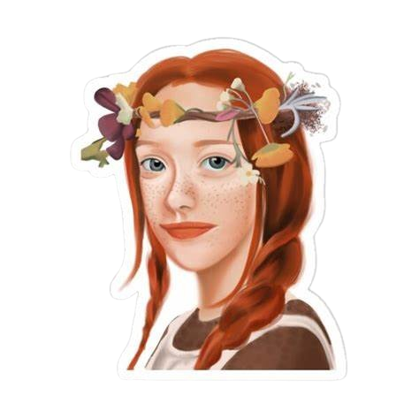

Depois de treze anos sofrendo no sistema de assistência social, a orfã Anne é mandada para morar com uma solteirona e seu irmão. Munida de sua imaginação e de seu intelecto, a pequena Anne vai transformar a vida de sua família adotiva e da cidade que lhe abrigou, lutando pela sua aceitação e pelo seu lugar no mundo.

Desenvolvido por Maria Julia Dutra e Thauane Stephane - Alunas do IFMS Campus Dourados